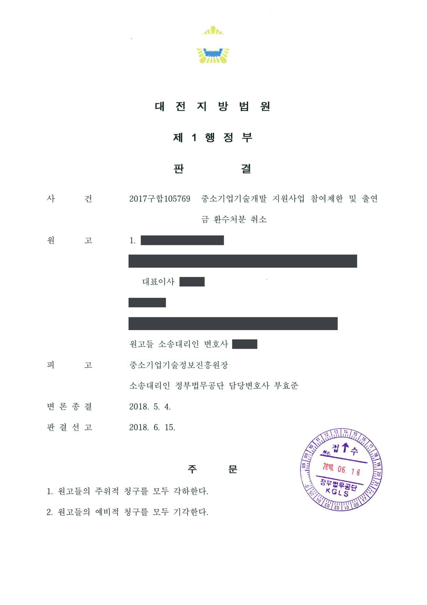
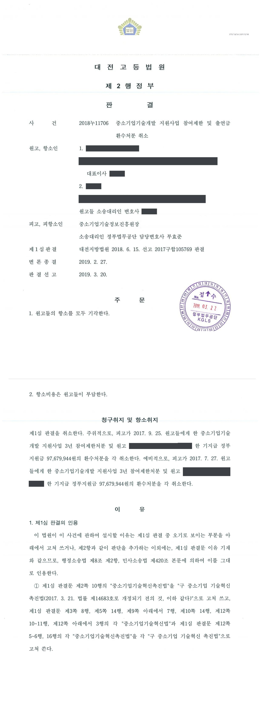
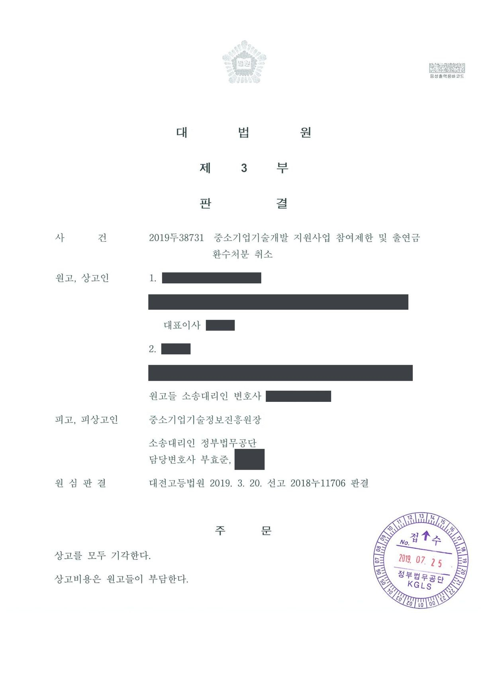

국가연구개발사업 참여제한 및 정부지원금 환수처분 취소소송 (1·2·3심)
대전지방법원 2017구합105769 · 대전고등법원 2018누11706 · 대법원 2019두38731 · 담당변호사 부효준
판결문



사건의 요지
창업성장기술개발사업의 건강진단연계 창업과제 수행과 관련하여 회사와 대표자에게 내려진 3년의 참여제한 및 지원금 환수처분에 관하여, 이의신청 결과 통보의 처분성(주위적 청구)과 원처분의 적법성(예비적 청구)이 다투어진 사건입니다. 대법원까지 처분의 적법성이 유지되었습니다.
사건의 주요 내용
원고 회사와 그 대표자는 창업성장기술개발사업의 건강진단연계 창업과제를 수행한 뒤, 전문기관으로부터 3년의 중소기업기술개발 지원사업 참여제한과 정부지원금 환수처분을 받았습니다. 원고들은 전문기관이 이의신청 결과를 통보한 것을 처분으로 보아 그 취소를 구하는 주위적 청구와, 원처분의 취소를 구하는 예비적 청구를 함께 제기하였습니다.
1심(대전지방법원 2017구합105769, 2018년 6월 선고)과 항소심(대전고등법원 2018누11706, 2019년 3월 선고)에서 원고들의 청구는 받아들여지지 않았고, 원고들은 상고하였습니다. 부효준 변호사는 전문기관을 대리하였습니다. 아래 내용은 상고심 판결을 중심으로 정리한 것이며, 1·2심의 구체적인 판단 내용은 생략합니다.
쟁점
- 전문기관의 이의신청 결과 통보가 원처분과 별개로 항고소송의 대상이 되는 처분인지(주위적 청구)
- 회사와 대표자에 대한 3년의 참여제한과 지원금 환수처분이 적법한지(예비적 청구)
- 상고이유가 상고심절차에 관한 특례법 제4조 제1항이 정한 심리속행 사유에 해당하는지
법원의 판단
대법원은 2019년 7월, 상고이유에 관한 주장이 상고심절차에 관한 특례법 제4조 제1항 각 호에 정한 사유를 포함하지 않거나 받아들일 수 없는 것이라고 판단하여 더 나아가 심리하지 않고 원고들의 상고를 모두 기각하였습니다(심리불속행 기각). 상고비용은 원고들이 부담하게 되었습니다.
이로써 회사와 대표자에 대한 참여제한과 지원금 환수처분이 적법하다고 본 원심판결이 그대로 확정되었습니다.
상고이유를 이 사건 기록 및 원심판결과 대조하여 살펴보았으나, 상고이유에 관한 주장은 상고심 절차에 관한 특례법 제4조 제1항 각 호에 정한 사유를 포함하지 않거나 받아들일 수 없는 것으로 판단된다. 그러므로 상고를 모두 기각하기로 대법관의 의견이 일치되어 주문과 같이 판결한다.
대법원 2019두38731 판결 이유
※ 판결 이유 가운데 이 사건의 판단 기준이 된 부분을 그대로 옮긴 것으로, 당사자 이름 등은 가렸습니다.
이 사건이 보여 주는 것
행정사건의 상고심은 법률심이어서, 상고이유가 원심판결의 헌법·법률 위반 등 상고심절차에 관한 특례법 제4조 제1항이 정한 사유에 해당하지 않으면 본안 심리 없이 상고가 기각됩니다. 참여제한·환수처분 사건은 과제 수행의 성실성과 재량권 행사에 관한 사실인정이 핵심이어서 대법원에서 결론이 바뀌는 일이 드물고, 결국 1심과 항소심에서 사실관계와 증거를 충실히 다투는 것이 중요합니다.
이 사건처럼 전문기관의 이의신청 결과 통보를 다투는 주위적 청구와 원처분을 다투는 예비적 청구를 함께 제기하는 방식은, 이의결정의 처분성이 부정될 위험에 대비하면서 원처분의 제소기간도 지키는 실무상의 대응책입니다.
관련 법령상고심절차에 관한 특례법 제4조 제1항
관련 단어참여제한지원금 환수상고 기각심리불속행상고심절차에 관한 특례법창업성장기술개발사업건강진단연계 창업과제이의신청 결과 통보처분성주위적·예비적 청구
비슷한 처분을 받으셨다면
국가연구개발 제재처분은 사전통지를 받은 날부터 20일 이내에 재검토 요청 의견을 내고, 처분이 있음을 안 날부터 90일 이내에 취소소송을 제기해야 합니다. 처분서나 사전통지서를 받은 날짜부터 확인해 드립니다.